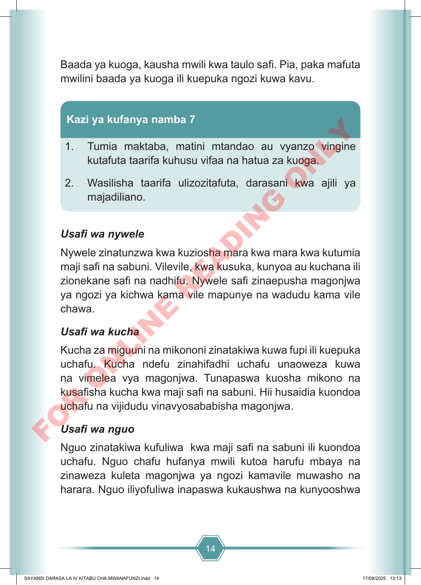

14 Baada ya kuoga, kausha mwili kwa taulo safi. Pia, paka mafuta mwilini baada ya kuoga ili kuepuka ngozi kuwa kavu. 1. Tumia maktaba, matini mtandao au vyanzo vingine kutafuta taarifa kuhusu vifaa na hatua za kuoga. 2. Wasilisha taarifa ulizozitafuta, darasani kwa ajili ya majadiliano. Kazi ya kufanya namba 7 Usafi wa nywele Nywele zinatunzwa kwa kuziosha mara kwa mara kwa kutumia maji safi na sabuni. Vilevile, kwa kusuka, kunyoa au kuchana ili zionekane safi na nadhifu. Nywele safi zinaepusha magonjwa ya ngozi ya kichwa kama vile mapunye na wadudu kama vile chawa. Usafi wa kucha Kucha za miguuni na mikononi zinatakiwa kuwa fupi ili kuepuka uchafu. Kucha ndefu zinahifadhi uchafu unaoweza kuwa na vimelea vya magonjwa. Tunapaswa kuosha mikono na kusafisha kucha kwa maji safi na sabuni. Hii husaidia kuondoa uchafu na vijidudu vinavyosababisha magonjwa. Usafi wa nguo Nguo zinatakiwa kufuliwa kwa maji safi na sabuni ili kuondoa uchafu. Nguo chafu hufanya mwili kutoa harufu mbaya na zinaweza kuleta magonjwa ya ngozi kamavile muwasho na harara. Nguo iliyofuliwa inapaswa kukaushwa na kunyooshwa SAYANSI DARASA LA IV KITABU CHA MWANAFUNZI.indd 14 SAYANSI DARASA LA IV KITABU CHA MWANAFUNZI.indd 14 17/09/2025 13:13 17/09/2025 13:13 F O R O N L I N E R E A D I N G O N L Y